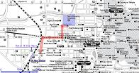
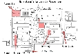
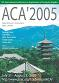

| Abstracts of presentations |
| You can download the abstracts of presentations in pdf. Click here. |
| Photos at the conference |
| While in the conference, a number of photos were taken by supporting staffs
and some of local organizers. If you would like to see them, please click
the following page and hopefully enjoy them :http://www.math.tsukuba.ac.jp/~sasaki-lab/ACA2005/gallery/. |
| Map |
 Nara City Map  Nara Women's University Campus Map |
| Final Announcement |
In this final version, added are
Have a nice trip to Japan, and enjoy Nara, Kyoto, and so on. Looking forward to seeing you soon. On Kyoto Excursion: You can buy an excursion ticket at Registration Desk. We will visit Kinkakuji-Temple (Golden-Temple), Gosho (Old Emperor's House), and so on, and finally go to a Kyoto Restaurant. Participants who buy tickets late cannot enter Gosho; all visitors must declare their visits previously and get admission. At Kansai International Airport (from 10:00 to 19:00, July 31): You will find students having an "ACA2005" card at the exit of custom. They will guide you to Money-Exchange counter, Bus-Ticket office and Bus-Stop going to Nara city. At JR-Nara Station (from 12:00 to 21:00, July 31): Several students will welcome you at the Bus-Stop near JR-Nara Station. They will guide you to your hotel. Please tell them your hotel name. A Cheap Hotel for Students: If you are a student and want a cheap hotel, please send an e-mail to the registration office ACA2005@math.tsukuba.ac.jp. The deadline is 21th July. The registration office will gather requests from students by the deadline, then the registration office will apply a group discount. The hotel information will be announced on 22th July. Other travel information for ACA'2005: If you arrive late, or go to Nara from Tokyo, Kyoto or elsewhere, and so on, please send an e-mail to Prof. Fukui, fukui@mwu.mukogawa-u.ac.jp, then he will give you an advice. Nara Weather: Japanese weather in middle summer will usually be quite hot and wet: 30 to 35 degree in C. (daytime), and humidity is 60 to 90 percent. Furthermore, we will have a sudden shower sometimes. You had better have an umbrella. Earthquakes: Japan is famous for earthquakes. Most earthquakes are never terrible. If you are lucky you can experience an earthquake; please enjoy it. |
| Conference Theme |
| The ACA conference is devoted to promoting the applications and development
of Computer Algebra and Symbolic Computation. Topics include Computer Algebra
and Symbolic Computation in science, engineering, mathematics, computer
science, education, and so on. |
| Date and Place |
| Date : July 31 - August 3, 2005 Place : Nara Women's University(Map) Address : Kitauoyahigashi-machi, Nara 630-8506 JAPAN |
 ACA'2005 poster (pdf 9.03MB) |
| Local Organizers |
| General Co-Chairs: Fujio Kako (Nara Women's Univ.), Matu-Tarow Noda (Ehime Univ.) Committee Members: Tetsuo Fukui (Mukogawa Women's Univ.), Hiroshi Kai (Ehime Univ.) Tateaki Sasaki (Tsukuba Univ.), Yosuke Sato (Tokyo Univ. of Sci.) Kiyoshi Shirayanagi (NTT Commun. Sci. Labs.) Tadashi Takahashi (Kobe Univ.), Akira Terui (Tsukuba Univ.). |
| Sponsors |
| JSSAC : Japan Society for Symbolic and Algebraic Computation IMACS : International Association for Mathematics and Computers in Simulation |